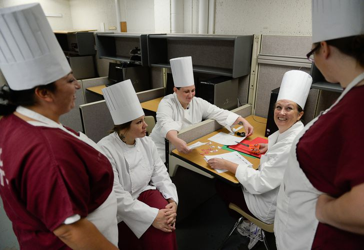

"Welcome to "Queen of the Kitchen," an exhilarating indoor game cooking competition that celebrates the culinary talents and creativity of women. Get ready to witness a battle of flavors, innovation, and teamwork as talented participants showcase their cooking prowess.Competitors, either solo or in pairs, will face off in a multi-round indoor game cooking challenge that will put their skills to the test. "
Cooking Competition Game Playing Criteria!
Certainly, here are some criteria for playing and judging an indoor cooking competition game:
Taste (Flavor and Seasoning):
Is the dish well-seasoned and balanced?
Do the flavors harmonize and create a delicious taste?
Is the seasoning appropriate and not overpowering?
Presentation (Plating and Visual Appeal):
Is the dish presented attractively on the plate?
Are the components arranged in an appealing manner?
Does the presentation enhance the overall dining experience?
Creativity and Innovation:
Has the participant(s) demonstrated originality in their dish?
Are unique ingredients or cooking techniques used to stand out?
Does the dish show a creative twist on a classic recipe?
Cooking Technique and Execution:
Are cooking methods appropriate for the ingredients used?
Is the dish cooked to the desired level of doneness?
Are technical skills, such as knife work and temperature control, executed well?
Adherence to Theme or Challenge:
Did the participant(s) successfully incorporate the specified theme or challenge?
Is there a clear connection between the dish and the theme?
Time Management:
Did the participant(s) effectively manage their time during cooking?
Is the dish completed within the allocated time without compromising quality?
Ingredient Usage and Compatibility:
Are the chosen ingredients suitable for the dish?
Do the ingredients complement each other in terms of flavor and texture?
